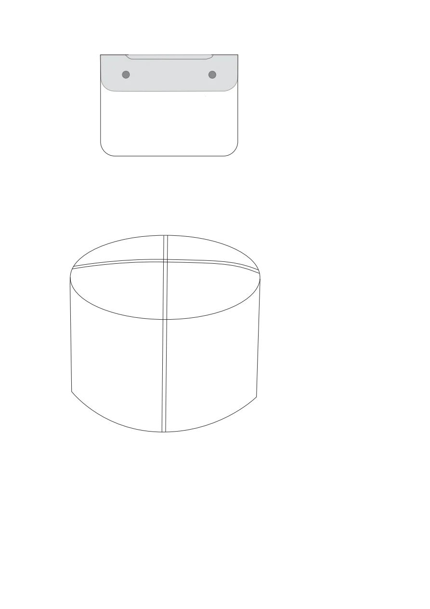
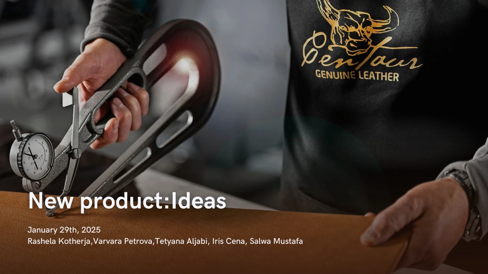

Material suitability
Heat testing informed consideration of different leather finishes.
Academic collaboration · Centaur Leather
Product-development work balancing the brand’s leather aesthetic with everyday use and manufacturing constraints.

01 · THE CHALLENGE
New products needed to complement an existing collection while remaining practical to manufacture. The team compared everyday objects through brand fit, material requirements, production complexity, and market appeal.
PROJECT GOALDevelop useful leather-product concepts suited to the brand and its available production methods.
02 · UNDERSTANDING

The documented heat tests showed that leather finishes reacted differently. That made material suitability a design decision, rather than a purely visual choice.
03 · EXPLORATION
The group explored cases, coasters, a pouf, a key holder, and desk accessories. Sketches, material testing, product descriptions, and feasibility comparisons informed the direction.
04 · FINAL SOLUTION
Heat testing informed consideration of different leather finishes.
The team considered existing machinery and material needs.
The concepts focus on practical objects and organization.
WANT THE DETAILS?
Explore the original university presentation and supporting process.
View presentation ↗05 · REFLECTION
The project developed two products from concept to prototype, supported by an ideas deck and final sketches. It connects product choices with material performance and production feasibility.